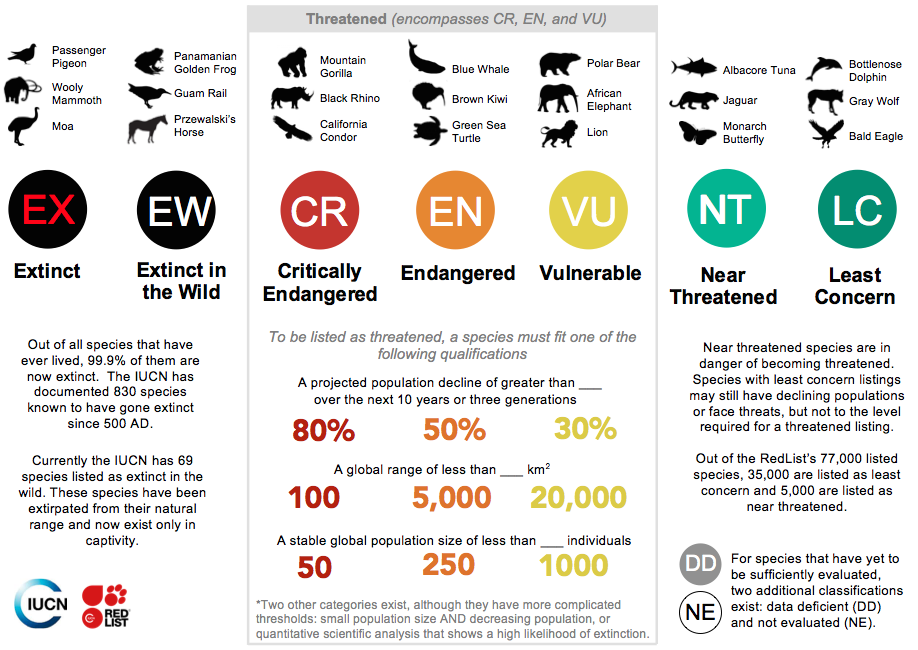

Project Purpose
The purpose of this project is to inform researchers, policymakers, and students of global animal population trends over time through interactive visualizations.
I) Introduction
Biodiversity plays a crucial role in maintaining ecosystem balance. However, global wildlife
populations are declining due to habitat destruction, climate change, and human activities.
According to the World Wildlife Fund (WWF), monitored wildlife populations have decreased
by an average of 73% from 1970 to 2020. Understanding these trends is essential for researchers
and policymakers to take necessary conservation measures.
This project aims to visualize global animal population trends over time, helping researchers
analyze species population shifts and identify areas of concern. By leveraging Tableau, this
project will provide interactive visualizations to explore species-specific and region-specific
trends.
The visualizations will highlight key trends such as regional population declines, species recovery patterns in certain habitats, and geographic hotspots where biodiversity loss is most severe. These insights aim to help prioritize conservation efforts across different regions and species.
Data Provided by
The Global Population Dynamics Database
IUCN Red List Categories Overview
The International Union for Conservation of Nature (IUCN) Red List is the world's most comprehensive source of information on the global extinction risk status of animal, plant, and fungal species.
Species are classified into categories based on population trends, range sizes, and survival prospects. These categories include:
- Extinct (EX) and Extinct in the Wild (EW): Species that no longer exist or only survive in captivity.
- Critically Endangered (CR), Endangered (EN), and Vulnerable (VU): Species facing extremely high, high, or high-to-moderate risk of extinction.
- Near Threatened (NT) and Least Concern (LC): Species that are still widespread but may be at risk in the future.
- Data Deficient (DD) and Not Evaluated (NE): Species that lack enough data or have not been assessed yet.
These categories help guide conservation priorities and raise awareness about the urgency of protecting global biodiversity.

Population of Global Wildlife Map (1900–2000)
Note: Instead of a traditional heatmap with rows and columns, this visualization uses a location-based population density map. Each point represents a recorded observation's geographic coordinate, allowing users to explore spatial patterns of species populations around the world.
This visualization shows the distribution and population size of different animal species around the world.
Each dot represents a location where a species was recorded.
Color represents population size:
Red means lower population.
Green means higher population (closer to 50,000).
On the right side, there's a filter panel where users can select or deselect species to focus on specific animals.
This visualization shows the average animal population across different biotope types (habitats) recorded between 1900 and 2000.
The x-axis represents the type of habitat, such as Marine, Grassland, Coastal, or Urban areas.
The y-axis shows the average number of individuals recorded in that habitat type.
Each bar is divided into segments colored by country, illustrating which countries contributed data to the average for each biotope.
II) Challenges Encountered and Addressed
One challenge was that a density map could not be created properly because the dataset's coordinates were very scattered and uneven. Many species had only a few data points or were concentrated in small areas, making density calculations unreliable.
Another limitation is that the dataset itself is relatively old and some records are outdated. Also, each species dataset covers only a small time range rather than continuous long-term monitoring, making it harder to show long-term trends clearly.
III) Design Decisions
Population of Global Wildlife Map (1900–2000)
- Map Style: A clean grayscale background was chosen to make the population points stand out.
- Color Encoding: Light to dark blue gradient represents population size.
- Interactivity: Filter panel and tooltips showing species info.
- Reasoning: Easier to detect regions with high or low wildlife population visually.
Average Wildlife Population Across All Species by Biotope Type
- Chart Type: Stacked bar chart.
- X-Axis: Biotope types like Marine, Grassland, Urban.
- Y-Axis: Average population recorded.
- Color Encoding: Different colors for countries.
- Interactivity: Hover to see details.
Overall Goal: Keep visualizations simple, clear, and interactive for easier exploration.
IV) Future Work
- Expand the time range with more recent data.
- Add more detailed species-level analysis.
- Improve global spatial coverage with additional datasets.
- Introduce predictive modeling for forecasting trends.
- Enhance user interactivity (e.g., time sliders, threat levels).
V) Conclusion
This project successfully visualized global animal population trends between 1900 and 2000 using Tableau dashboards. Despite data challenges, it provides accessible insights for researchers, policymakers, and students.
Future enhancements like adding predictive models and updated data will further improve its utility for biodiversity conservation efforts.